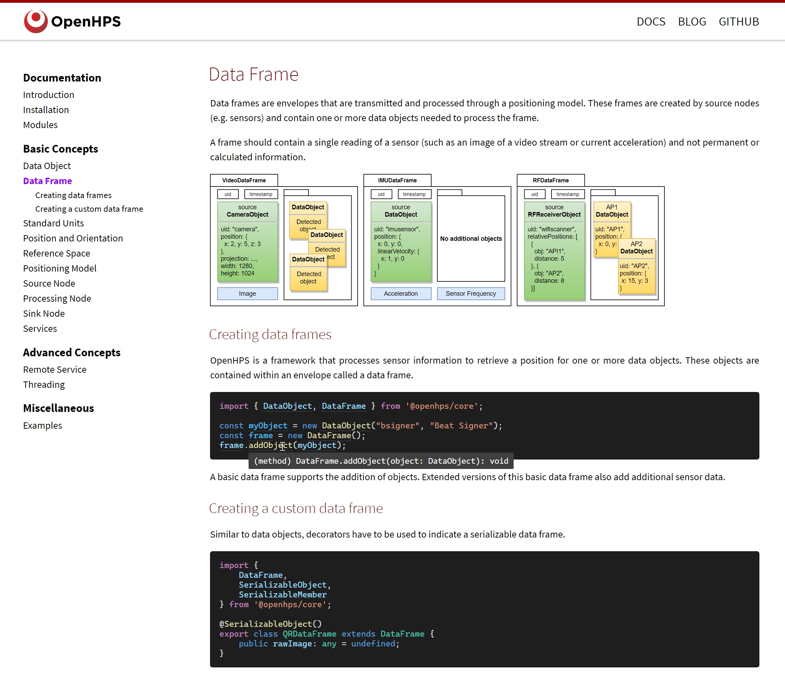
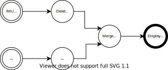
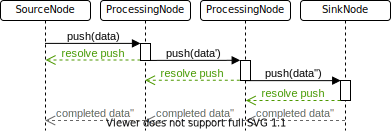
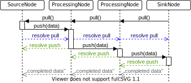

Indoor Positioning System
"An indoor positioning system (IPS) is a network of devices used to locate people or objects where GPS and other satellite technologies lack precision or fail entirely, such as inside multistory buildings, airports, alleys, parking garages, and underground locations."
Location Awareness
"Location awareness refers to devices that can passively or actively determine their location."
Contextual Location Awareness
Using the location of a person or asset as contextual information for implicit human-computer interaction.
NOTE: You will see implicit human-computer interaction in a later lecture
Use Cases
Indoor Navigation
Use Cases ...
Asset Tracking
- Track the location of expensive items
- Material resource planning
- Personnel tracking
Use Cases ...
Implicit Interaction
- Home automation
- Resource assigning
- Machine learning recommendations
Use Cases ...
Autonomous Robots
Positioning Technologies
- RF-based (Wi-Fi, Bluetooth, UWB)
- Sound-based (Ultrasound beacons, ambient noise)
- Camera-based (VSLAM, MTMC, VLC)
- Inertial Measurement Unit (IMU-based) (acceleration, velocity, geomagnetic)
- Many more ...
Positioning Algorithms
- Fingerprinting (k-NN, affinity propagation, clustering, ...)
- Mathematical (triangulation, multilateration, ...)
- Dead reckoning
- Sensor fusion (complementary filters, probabilistic, ...)
- Cartographing
- Many more ...
Bluetooth beacons
A small (battery powered) device that sends out a BLE advertisement in a fixed interval. The received signal strength is used to esimate the linear distance.
Algorithms:
- Fingerprinting
- Multilateration, Cell-Identification
Multilateration (>3 transmitters)
Multilateration (2 transmitters)
Cell-Identification (1 transmitter)
Ultra wideband
A small (battery powered) device that sends out an RF signal over a large band (6 - 8 GHz), allowing the use of Time of Flight (ToF) for determining the distance to centimeter precision. More power consumption than BLE.
Algorithms:
- Multilateration
Wi-Fi access points
Existing Wi-Fi infrastructure to predict the position based on the signal strength or Time of Flight (ToF) on supported access points.
Algorithms:
- Fingerprinting
- Multilateration
Fingerprinting

Fingerprinting ...
Inertial Measurement Unit (IMU sensor)
Accelerometer, gyroscope and magnetometer to determine the orientation, linear and angular velocity. Optionally can contain a barometer.
Algorithms:
- Dead reckoning (raw, pedometer)
- Geomagnetic fingerprinting
Dead Reckoning

What is OpenHPS?
An Open Source Hybrid Positioning System
OpenHPS
An Open Source Hybrid Positioning System
- Any technology
- Any algorithm
- Various use cases
- Flexible processing and output
- Prefer accuracy over battery consumption, reliability, ...
- Aimed towards developers and researchers
Process Network Design

Process Network Design ...

Process Network Design ...

Process Network Design ...

Process Network Design ...

Process Network Design ...

Modularity

Modularity ...
Modularity ...
Modularity ...

Modularity ...
Modularity ...

Data Processing

DataObject

ts
DataObject
ts
DataObject
ts
DataObject
ts
Absolute and Relative Positions
Absolute
- 2D, 3D, geographical, ...
- Within a reference space
Relative
- Distance, angle, velocity, ...
- Relative to another object
ts
DataFrame

ts

DataFrame ...
Pushing Data
DataFrame ...
Pulling Data
Positioning Model
ts

Exercises Dataset
Exercise 1 - Multilateration
Question 1
Create a new Bluetooth beacon object with the ID column as its uid and an absolute 3d position for the X, Y and Z coordinates. Return the beacon object in this function.
Question 2
Create a relative position for the rssi and beacon Use the RelativeRSSI class in combination with a new BLEObject that uses the beacon name as its UID
Exercise 1 ...
Question 3
Convert the RSSI to a distance using log distance propagation Assume we have a calibrated received signal strength of -69 at 1 meter distance. Play around with the environment factor to see what works best.
Question 4
Use the RSSI converted to a distance (from question 2) to calculate the position with multilateration.
Exercise 2 - Fingerprinting
Question 1
Create a fingerprint service that will store the scene analysis. Experiment with the default RSSI value and grouping
Question 2
Create a KNN fingerprinting node to convert sensor data to a position. Experiment with the parameters to obtain a better result.
Exercise 3 - Location Awareness
Question 1
Load the spaces/features defined in our dataset (spaces.geo.json). The file is already loaded as the variable GEOJSON_FEATURES.
Question 2
Emit the event of entering and exiting a space This event should only trigger when you enter a new space. The 'enterspace' event should only trigger when you enter a new space. The 'exitspace' event should only trigger when you leave a space.